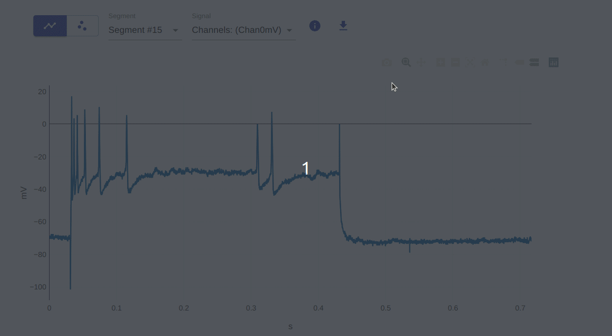
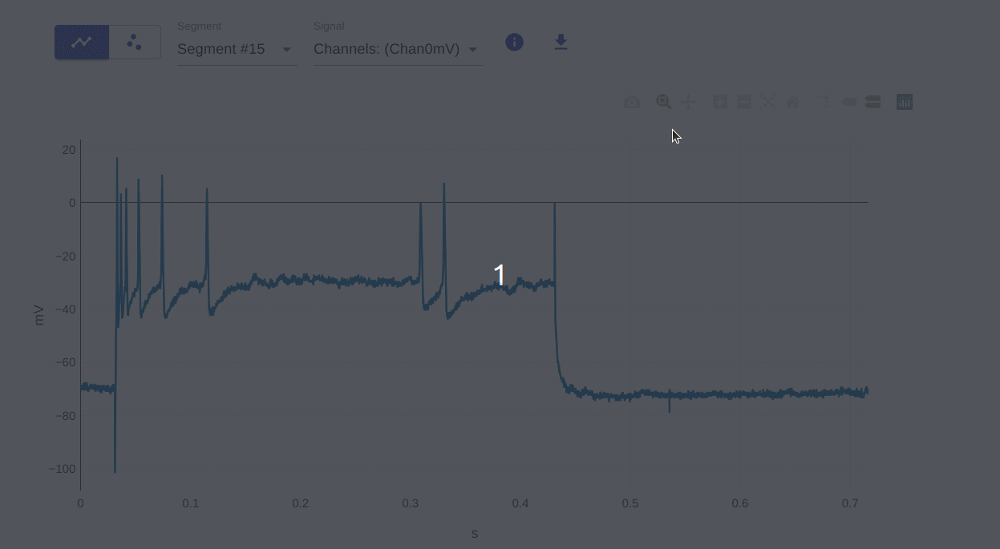
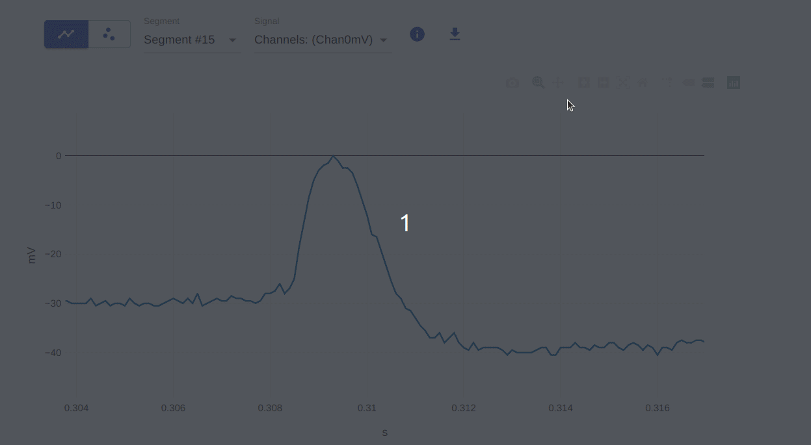
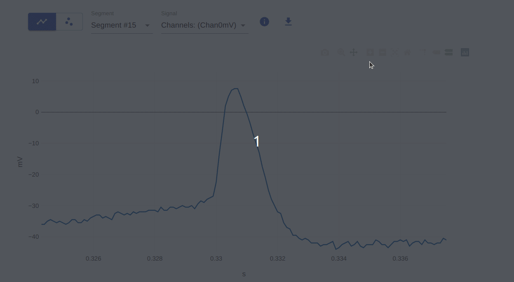
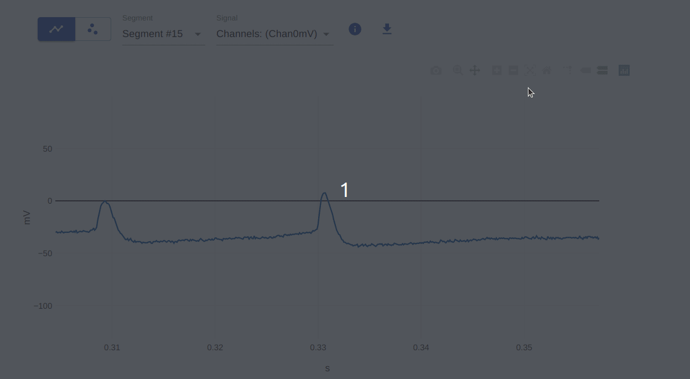
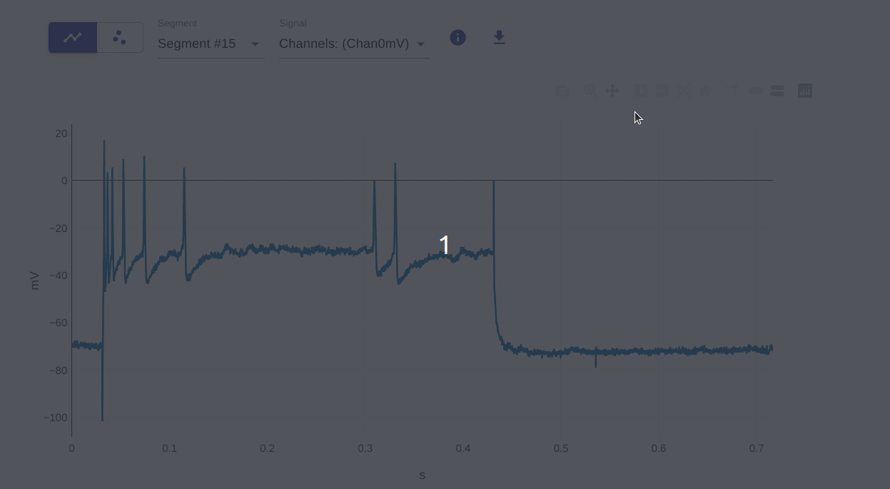
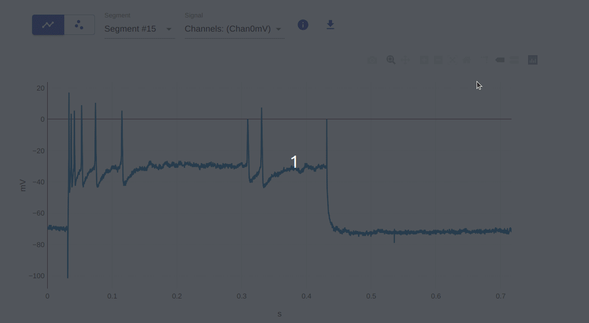
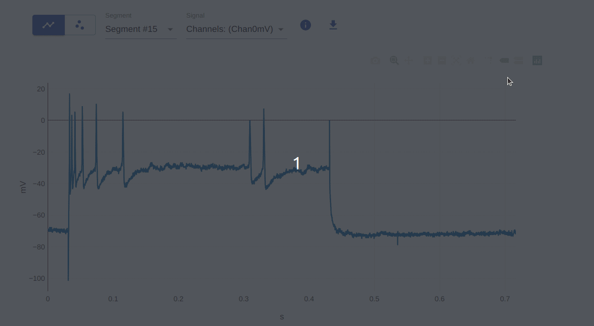

Visualizer Interactivity Features
The visualizer offers various interactive features for exploring data, courtesy of the underlying Plotly.js library.
1. Download plot as PNG
Download the current plot as a PNG — useful for saving or sharing results.

2. Zoom (select region of interest)
Click and drag to zoom in. Double-click to reset.

3. Pan
Click and drag to pan. Double-click to reset.

4 & 5. Zoom in / Zoom out
Use toolbar buttons or the scroll wheel. Double-click to reset.

6. Autoscale
Resets the plot to fit all data after zooming or panning.

7. Reset axes
Resets only the axes without rescaling the data range.

8. Toggle Spike Lines
Toggles the vertical and horizontal crosshairs shown on hover.

9 & 10. Show closest / Compare data on hover
Hover to display the nearest data point value, or compare multiple traces at once.
